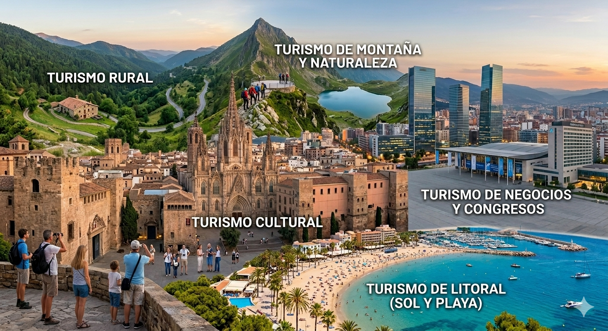
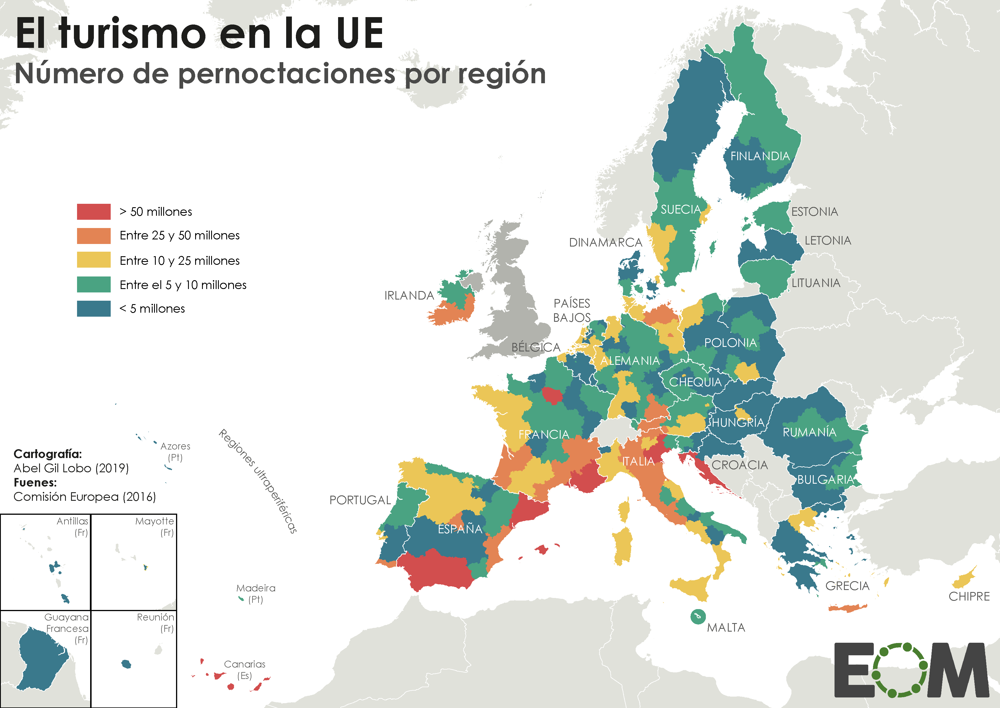
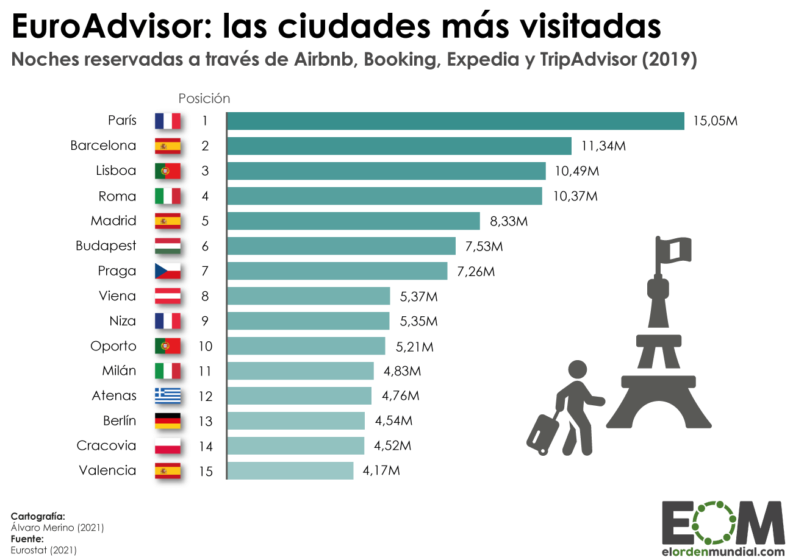
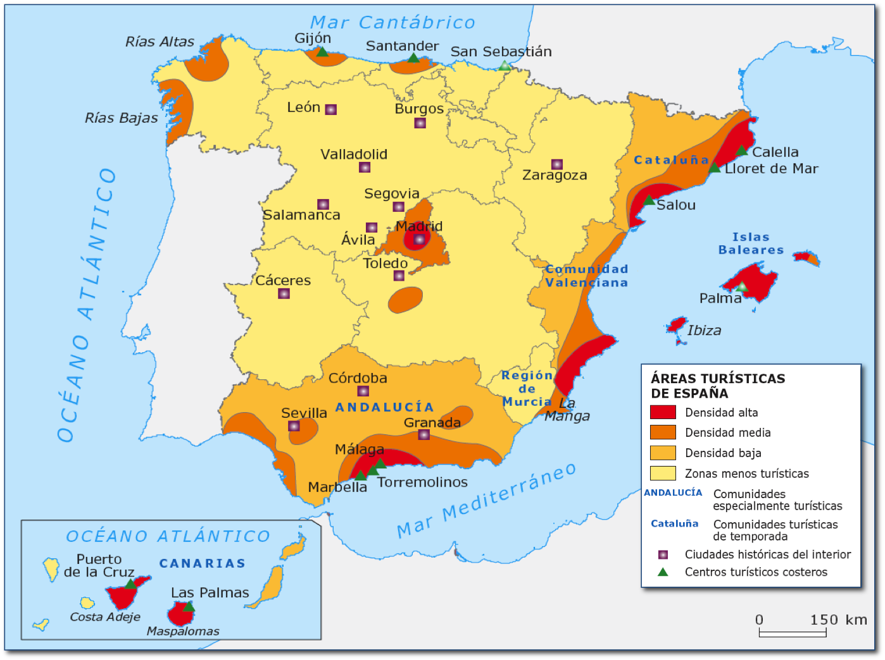
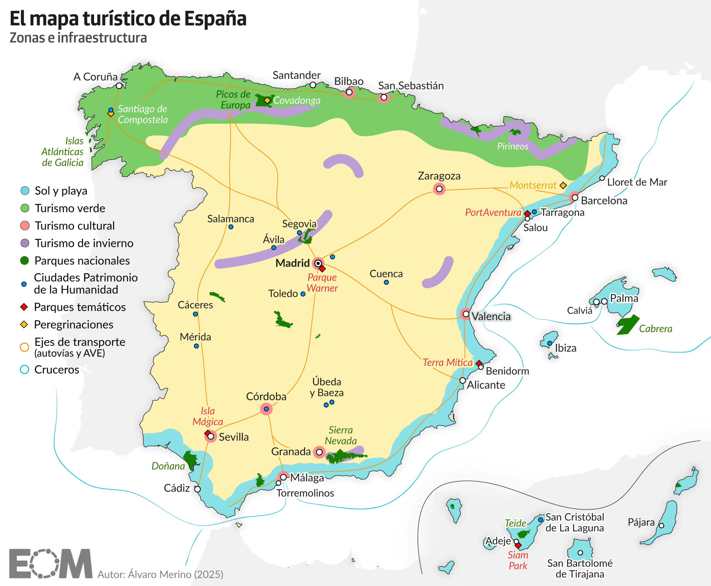
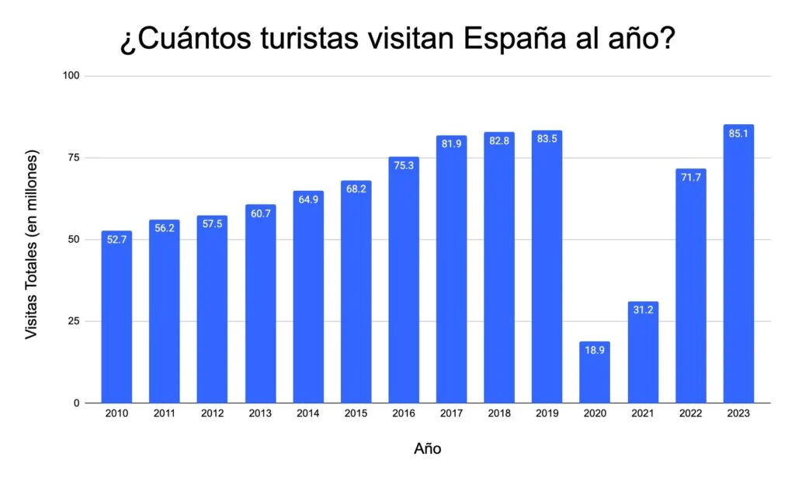

Navegación
¡Explora!
 (5).png)
Rasgos del turismo
La importancia del turismo en la economía actual.
Definición: El turismo es el movimiento temporal de personas fuera de su lugar de residencia por motivos de ocio o profesionales , por un período mínimo de 24 horas (pernoctación) y máximo de un año. Actualmente, es uno de los sectores más dinámicos y potentes del mundo, llegando a representar el 10,4% del PIB mundial y generando uno de cada diez empleos a nivel global.
Definición:El turismo es el movimiento temporal de personas fuera de su lugar de residencia por motivos de ocio o profesionales,por un período mínimo de 24 horas (pernoctación) y máximo de un año.Actualmente, es uno de los sectores más dinámicos y potentes del mundo, llegando a representar el 10,4% del PIB mundial y generando uno de cada diez empleos a nivel global
En la actualidad, es un fenómeno de masas. Durante décadas, el número de turistas se ha incrementado hasta debido a:
- La extensión del estado del bienestar (mayor poder adquisitivo, vacaciones retribuidas, jubilaciones, etc.).
- El abaratamiento y la rapidez de los transportes. La expansión del automóvil y, sobre todo, el abaratamiento del transporte aéreo con la aparición de las compañías de bajo coste (low cost) han facilitado el acceso a destinos lejanos.
- La existencia de una amplia oferta de servicios turísticos, como agencias de viajes, alojamientos, etc,favorecidos en su expansión por el desarrollo de internet.
Impactos positivos y negativos del turismo
Impactos positivos del turismo
Impactos positivos del turismo
|
Impacto |
Explicación |
Ejemplos principales |
|
Económico |
Aumenta la economía local y mundial, crea empleo y atrae divisas (dinero de otros países). |
Hoteles, restaurantes, transporte, agencias |
|
Demográfico |
Favorece el crecimiento de la población, sobre todo en zonas rurales por la llegada de turistas. |
Más gente en pueblos turísticos en verano |
|
Sociocultural |
Permite conocer otras culturas, practicar idiomas y ayuda a conservar el patrimonio cultural. |
Museos, fiestas locales, monumentos |
|
Ambiental |
Puede ayudar a la conservación de espacios naturales |
|
Impactos negativos del turismo
|
Impacto |
Explicación |
Ejemplos principales |
|
Económico |
Puede subir los precios (especialmente de la vivienda) y crear trabajos poco cualificados, y mal pagados |
Subida de alquileres, empleos temporales (estacionales) |
|
Ambiental |
Provoca contaminación, consume muchos recursos y reduce los espacios naturales.
|
Degradación del paisaje, sobreexplotación del agua, aumento de residuos y contaminación uso intensivo de coches |
|
Sociocultural |
Puede saturar los servicios públicos, y hacer que las ciudades pierdan su identidad y empeore la vida de los vecinos. |
Masificación, pérdida de tradiciones y aparición de la turismofobia (rechazo de la población local ante la masificación) |
¿Es posible un turismo sostenible?
El turismo sostenible trata de reducir las repercusiones negativas a través de la conservación de los recursos medioambientales, el respeto de la autenticidad sociocultural de los lugares visitados y el reparto equitativo de los beneficios socioeconómicos del turismo.
Situación actual del Turismo mundial
En el año 2020, a raíz de la pandemia de la COVID-19, se produjo un descenso del número de turistas internacionales del 74%, pasando de 1.500 millones de turistas en 2019 a tan solo 367 millones en 2020. Aunque se preveía que su recuperación fuera lenta y progresiva, la realidad es que ya en 2024 el turismo internacional se ha recuperado casi por completo, alcanzando cifras similares o superiores a las de antes de la pandemia en la mayoría de regiones.
.png)
.png)
Distribución mundial y flujos turísticos.
El mapa del turismo mundial muestra una distribución desigual. Las principales zonas emisoras (de donde salen los turistas) coinciden con los países de alto desarrollo: Europa (48% del total), Asia-Pacífico (26%) y América del Norte (17%).
En cuanto a los destinos receptores , Europa sigue siendo el líder indiscutible, recibiendo algo más de la mitad de los visitantes internacionales. Los países más visitados del mundo son, habitualmente, Francia, España, Estados Unidos, China e Italia . Sin embargo, regiones como el sudeste asiático (Tailandia, Japón) y México han experimentado crecimientos muy rápidos en los últimos años.
Tipos de turismo
La oferta turística se ha diversificado enormemente para adaptarse a los nuevos gustos de los consumidores. Las principales modalidades son:
- Turismo de Litoral (Sol y Playa): Es el más masivo y popular. Se concentra en zonas costeras de clima templado o cálido y requiere de una gran infraestructura hotelera y de servicios.
- Turismo Cultural : Centrado en la visita a ciudades con un rico patrimonio histórico-artístico, museos, monumentos o eventos culturales (festivales, gastronomía).
- Turismo de Montaña y Naturaleza: Incluye actividades como el esquí, el senderismo o el alpinismo, buscando el contacto con ecosistemas de gran valor.
- Turismo de Negocios y Congresos: Motivado por la asistencia a ferias, convenciones o reuniones profesionales, valorando la calidad de las comunicaciones y las infraestructuras urbanas.
-
Turismo Rural: Enfocado en el descanso en entornos tranquilos, el conocimiento de actividades agrarias tradicionales y el consumo de productos artesanales.

El turismo en Europa y España
El turismo en Europa
Europa es el principal foco receptor de turistas del mundo y, antes de la pandemia de la COVID-19, recibía cerca de 750 millones de turistas, casi la mitad del turismo internacional. Cinco de los diez destinos más visitados del mundo se encuentran en este continente: Francia, España, Italia, Alemania y el Reino Unido.

La contribución del sector turístico suponía el 10% de su PIB y el 11% del empleo total de la Unión Europea. Esta actividad no solo crea riqueza, sino que impulsa la innovación y el desarrollo en las regiones más desfavorecidas. En términos de ingresos, Europa alcanza el 39% de los beneficios mundiales por turismo
En la actualidad, el sector turístico está iniciando una recuperación progresiva de su actividad tras la pandemia. A pesar de esta nueva situación, la UE continúa siendo el principal receptor de turismo mundial gracias a su patrimonio histórico artístico, sus espacios naturales y sus playas.

La oferta turística es sumamente diversa y se organiza en las siguientes modalidades:
- Turismo Cultural : Es uno de los grandes reclamos debido al inmenso patrimonio histórico, artístico y monumental de capitales como París, Londres, Roma, Praga y Madrid.
- Turismo de Litoral (Sol y Playa): Se concentra mayoritariamente en los países mediterráneos, destacando las
costas españolas, italianas, griegas y francesas.
- Turismo de Montaña y Naturaleza : Los Alpes son el destino principal para la práctica del esquí y deportes de invierno, además del senderismo y el alpinismo.
- Otras modalidades : El turismo rural, el de negocios (congresos y convenciones en grandes sedes internacionales) y el religioso (Roma y Santiago de Compostela) también tienen un peso significativo.
Las políticas de la UE que contribuyen al desarrollo y la recuperación del turismo gracias a :
- U na buena red de transportes . La densa red de autovías, la alta velocidad ferroviaria y los grandes aeropuertos (como Londres-Heathrow o París-Charles de Gaulle) garantizan una gran accesibilidad territorial.
- L a seguridad y facilidad de tránsito a través de las fronteras. Las políticas de la UE que permiten la libre circulación por las fronteras facilitan muchísimo los viajes.
- La financiación de proyectos de turismo sostenible regionales y locales por el Fondo Europeo de Desarrollo Regional (FEDER).
El turismo en España
El turismo es uno de los principales motores económicos de España. En 2020, el turismo cayó dividido por la C OVID-19, pero desde entonces ha mostrado una recuperación progresiva.
En 2023, su aportación alcanzó el 12,8% del PIB nacional, y la actividad supone alrededor del 12% del empleo total en España y consolida su posición como uno de los destinos turísticos líderes del mundo, situándose habitualmente como el segundo o tercer país con más visitantes extranjeros.
La mayoría de estas visitas turísticas fueron por motivos de ocio y vacaciones (55%), para visitar a conocidos o por motivos religiosos.
Turismo internacional
● En 2023, España recibió 85,7 millones de turistas internacionales, superando las cifras previas a la pandemia ● Los principales países emisores fueron Reino Unido, Francia y Alemania.
● Las regiones más visitadas fueron Cataluña, Baleares, Canarias, Andalucía y Comunidad Valenciana. Turismo nacional.
● El turismo interno sigue siendo muy importante, con más de 170 millones de viajes anuales realizados por residentes en España.
● Los destinos favoritos suelen ser las zonas costeras, estacionales y concentradas en el litoral mediterráneo y los archipiélagos (Baleares y Canarias) aunque también destacan Madrid y otras grandes ciudades.
A pesar de la recuperación, persisten retos como la masificación en algunos destinos y el impacto medioambiental. Por ello, se impulsa un modelo de turismo sostenible que equilibra las necesidades del sector, el territorio y la ciudadanía.
|
Fortalezas |
Debilidades |
|
● Extraordinarios recursos turísticos, naturales, históricos y culturales (es el segundo país con más ciudades Patrimonio de la Humanidad) ● Excelente climatología y proximidad. geográfica a los principales mercados emisores ● Elevada conectividad e infraestructuras turísticas y de transporte de alta calidad. ● Elevada fidelidad de los turistas internacionales ● Altos niveles de calidad y servicio en la oferta turística ● Altos niveles de seguridad y servicios públicos de calidad. |
● Dependencia del turismo de sol y playa ● Dependencia de los mercados británico, francés y alemán ● Alta estacionalidad de la oferta turística ● Masificación del espacio en algunos destinos urbanos y litorales e impacto medioambiental por la edificación masiva en las costas. ● Brecha digital que excluye a muchas pymes ● Nuevas plataformas digitales que han cambiado los modelos turísticos de ciudades y destinos ● Precarización de las condiciones laborales en el sector ● Desaprovechamiento del potencial turístico rural. |
Los espacios turísticos españoles .
Podemos distinguir 4 grandes tipos de espacios turísticos en España:
1) Espacios turísticos rurales:Son áreas rurales con valores históricos, artísticos, naturales o etnográficos de interés. El turismo dinamiza estas comunidades a través de actividades como el agroturismo, el ecoturismo o el turismo activo.
2) Espacios turísticos de montaña: Permiten la práctica de deportes invernales (esquí, snowboard) y otras disciplinas durante todo el año (alpinismo, senderismo). Destacan las estaciones de los Pirineos, la Cordillera Penibética, la Cordillera Cantábrica y el Sistema Central, así como parques nacionales como Ordesa, Sierra de Guadarrama o Picos de Europa.
3) Espacios turísticos litorales: El turismo de sol y playa es el más numeroso y presenta una marcada estacionalidad, con picos en verano. Los principales destinos son la Costa Brava, Costa Dorada, Costa Blanca, Costa del Sol, Costa de la Luz, Rías Altas y Bajas, y el litoral cantábrico.
4) Espacios turísticos urbanos: Las ciudades concentran importantes infraestructuras de transporte y servicios de movilidad sostenible. España es el segundo país del mundo en número de ciudades Patrimonio de la Humanidad. El turismo de cruceros y el turismo de negocios y congresos también han experimentado un gran desarrollo en las principales ciudades portuarias, junto al turismo gastronómico y de compras.
 
